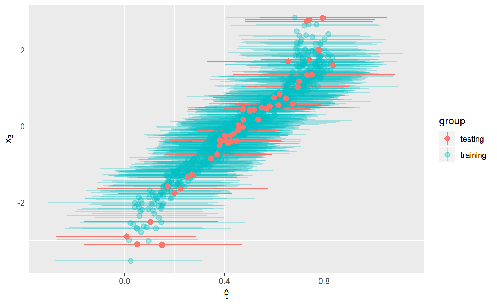
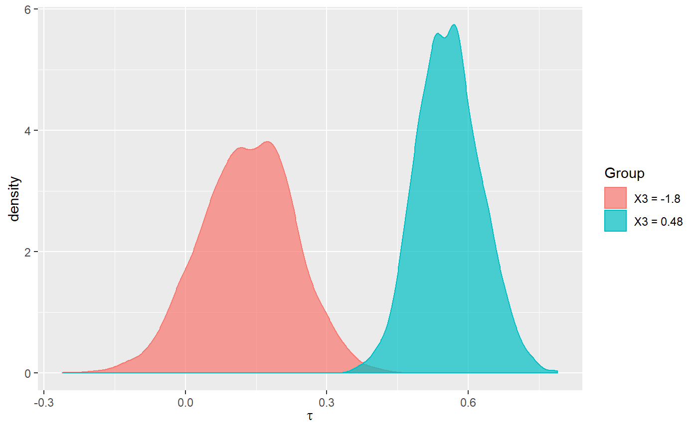

02_predict-example.RmdIn this vignette, we show how to use the bcf package to fit a model and use the fitted object to predict estimates for new data.
We will fit the model to simulated data, following exactly the same process as in the main vignette.
For that reason, we do not show the data generation steps here.
We now fit a BCF model to the simulated data. This is the same model as we fit in the main vignette.
bcf_out <- bcf2::bcf(y = y,
z = z,
x_control = x,
x_moderate = x,
pihat = pi,
nburn = n_burn,
nsim = n_sim,
w = weights,
n_chains = 2,
update_interval = 1)We now use our testing Xs for prediction. First, we generate a testing dataset. we purposefully make sure that we have some values outside of the range of our training dataset to allow us to gage out-of-sample error.
## Testing data
n_test = 50
x_pred <- matrix(rnorm(n_test*p), nrow=n_test)
special_x3 <- c(-3.1, -2.9, 2.76, 2.8, 2.85)
x_pred[ (n_test - length(special_x3) + 1 ):n_test,3] <- special_x3 # including some X3s outside of range
q_pred <- -1*(x_pred[,1]>(x_pred[,2])) + 1*(x_pred[,1]<(x_pred[,2])) - 0.1
pi_pred <- pnorm(q_pred)
z_pred <- rbinom(n_test,1, pi_pred)We now use this data to generate predictions based on our model.
pred_out = bcf2::predict(bcf_out=bcf_out,
x_predict_control=x_pred,
x_predict_moderate=x_pred,
pi_pred=pi_pred,
z_pred=z_pred,
save_tree_directory = '..')
#> Initializing BCF Prediction
#> Starting PredictionLet’s compare the results of our training and testing data. We will show the estimated treatment effects for training and test observations as a function of \(x_3\), which is an effect modifier.
lower <- c(apply(bcf_out$tau, 2, quantile, 0.025), apply(pred_out$tau, 2, quantile, 0.025))
upper <- c(apply(bcf_out$tau, 2, quantile, 0.975), apply(pred_out$tau, 2, quantile, 0.975))
group <- factor(c(rep("training", n), rep("testing", n_test)))
ggplot(NULL, aes(x = c(x[,3], x_pred[,3]),
y = c(colMeans(bcf_out$tau), colMeans(pred_out$tau)),
alpha = group,
color = group)) +
geom_pointrange(aes(ymin = lower, ymax = upper)) +
scale_alpha_discrete(range = c(1.0, 0.3)) +
xlab(TeX("$x_3$")) +
ylab(TeX("$\\hat{\\tau}$")) +
coord_flip()
#> Warning: Using alpha for a discrete variable is not advised.
The estimates for testing observations have treatmentent effects well within the range of the treatment effects for training observations, even though the test data set contains more extreme values of \(x_3\). It is reassuring that these observations’ treatment effects still fall within the expected range, suggesting that this model is not overly vulnerable to out-of-sample prediction error.
We can use predict() to compute mean marginal effects, in other words the mean difference in predicted estimates assuming all observations have the same characteristics but one. We provide an example using the extreme cut-offs identified in the CART tree of the main vignette (\(x_3 = -1.8\) and \(x_3 = 0.48\)).
x_low <- x; x_high <- x
x_low[,3] <- -1.8
x_high[,3] <- 0.48
pred_low = bcf2::predict(bcf_out=bcf_out,
x_predict_control=x_low,
x_predict_moderate=x_low,
pi_pred=pi,
z_pred=z,
save_tree_directory = '..')
#> Initializing BCF Prediction
#> Starting Prediction
pred_high = bcf2::predict(bcf_out=bcf_out,
x_predict_control=x_high,
x_predict_moderate=x_high,
pi_pred=pi,
z_pred=z,
save_tree_directory = '..')
#> Initializing BCF Prediction
#> Starting PredictionNow that we have our predictions, we look at the distributions of average treatment effects for each group.
# Computing weighted means to get distribution of posterior average estimates
lowDist <- apply(pred_low$tau, 1, weighted.mean, weights)
highDist <- apply(pred_high$tau, 1, weighted.mean, weights)
distDF <- data.frame(taus = c(lowDist, highDist),
Group = factor(c(rep("X3 = -1.8", length(lowDist)), rep("X3 = 0.48", length(highDist)))))
ggplot(distDF, aes(taus, group = Group, color = Group, fill = Group)) +
geom_density(alpha = 0.7) +
xlab(TeX("$\\tau$"))
We see that the marginal mean treatment effects for the two groups barely overlap. We can confirm this by comparing the 95% credible intervals for each distribution.